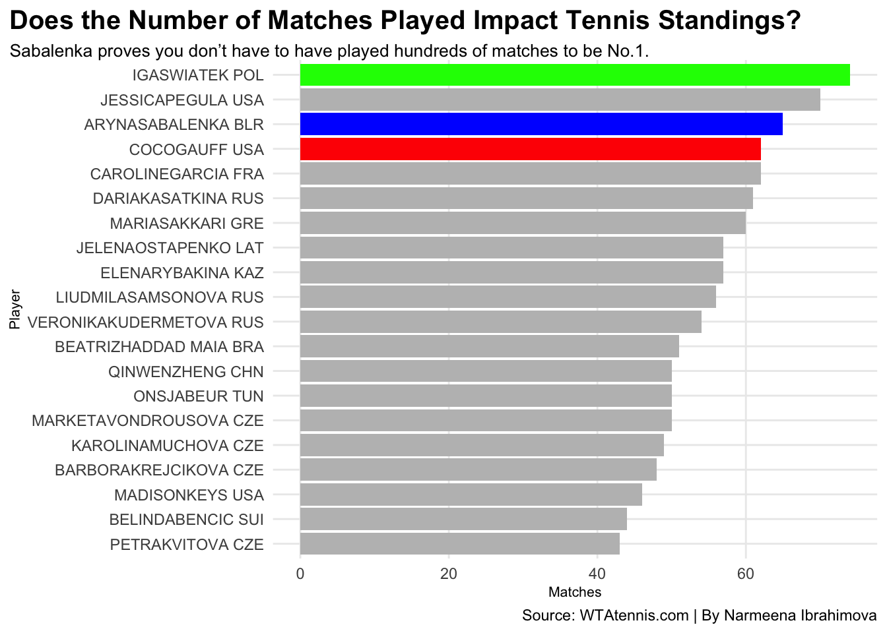
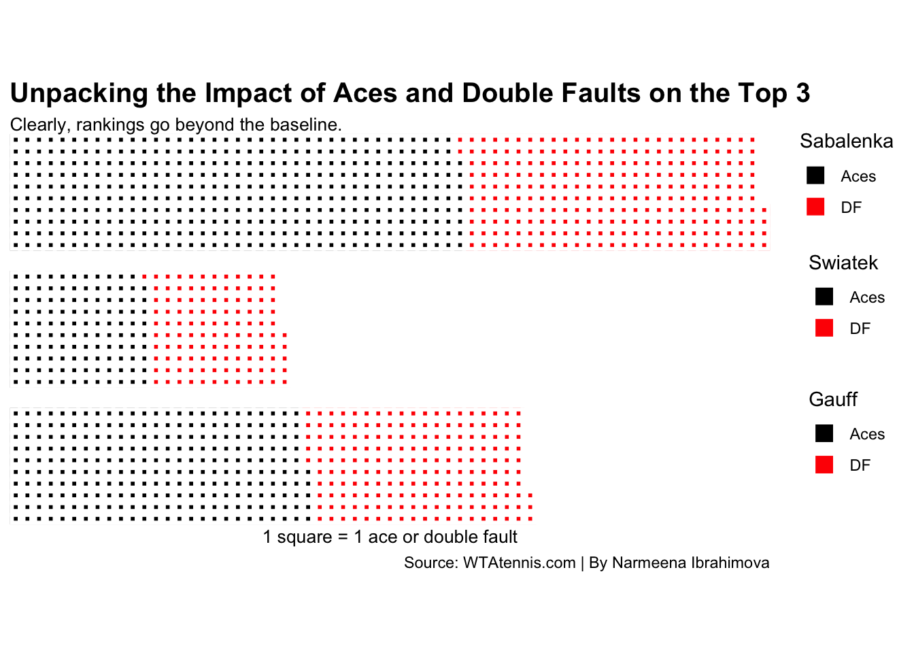
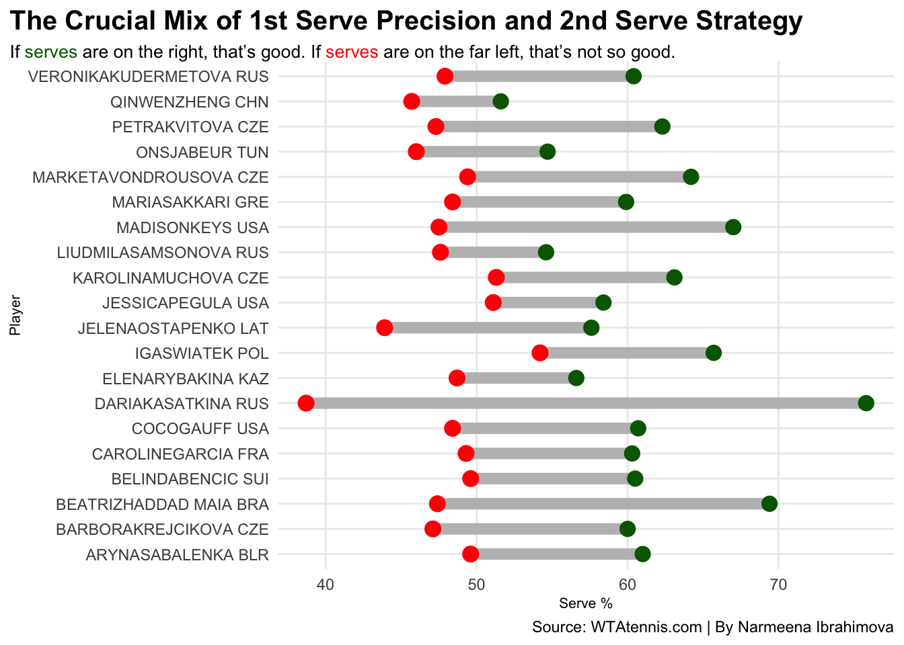

Ever since Cori ‘Coco’ Gauff won her first professional match in May 2018 at the ripe age of 13, she has been the talk of the women’s tennis world. Gauff has career-high rankings of world No.3 in singles and of world No.1 in doubles by the Women’s Tennis Association (WTA).
Impressive isn’t even the word for a 19-year-old.
She’s constantly compared to her own role model, Serena Williams, the GOAT of women’s tennis. That says a lot. In 2023, at 19, she became the youngest woman to win the US Open since Serena Williams.
So why isn’t she ranked No.1?
To see if experience matters, here’s a look at rankings and how many matches the top 20-ranked players have played.
Code
library(tidyverse)library(ggalt)library(ggtext)tennis <-read_csv("tennis.csv")top20 <- tennis |>filter(Rank<=20)cg <- top20 |>filter(Player =="COCOGAUFF USA")as <- top20 |>filter(Player =="ARYNASABALENKA BLR")is <- top20 |>filter(Player =="IGASWIATEK POL")ggplot() +geom_bar(data=top20, aes(x=reorder(Player, Matches), weight= Matches), fill="grey") +geom_bar(data=cg, aes(x=reorder(Player, Matches), weight= Matches), fill="red") +geom_bar(data=as, aes(x=reorder(Player, Matches), weight= Matches), fill="blue") +geom_bar(data=is, aes(x=reorder(Player, Matches), weight= Matches), fill="green") +theme_minimal() +coord_flip() +labs(x="Player",y="Matches",title ="Does the Number of Matches Played Impact Tennis Standings?",subtitle ="Sabalenka proves you don't have to have played hundreds of matches to be No.1.",caption ="Source: WTAtennis.com | By Narmeena Ibrahimova" ) +theme_minimal() +theme(plot.title =element_text(size =15, face ="bold"),axis.title =element_text(size =8), plot.subtitle =element_textbox_simple(size=10), panel.grid.minor =element_blank(),plot.title.position ="plot" )

Looking at this chart it shows Gauff has played 62 matches, while Iga Swiatek(2) has played 74 and Aryna Sabalenka(1) has played 65.
It’s clear that the number of matches these players have played doesn’t really have an effect on their ranking itself. Though, playing more matches puts their name and face out there, it doesn’t really have a big effect on their placement on the leaderboard.
But what about their actual performance on the court?
Points don’t start unless the serve goes in. Gauff has a killer serve. Watching her is like watching a mini Williams.
Code
library(waffle)ab <-c("Aces"=388, "DF"=256)ip <-c("Aces"=119, "DF"=116,409)cg <-c("Aces"=255, "DF"=188,201)iron(waffle(ab,rows =10, colors =c("black", "red") ) +guides(fill=guide_legend(title="Sabalenka")) +labs(title ="Unpacking the Impact of Aces and Double Faults on the Top 3",subtitle ="Clearly, rankings go beyond the baseline.",color="Sabalenka" ) +theme(plot.title =element_text(size =15, face ="bold"),axis.title =element_text(size =8), plot.subtitle =element_textbox_simple(size=10), panel.grid.minor =element_blank(),plot.title.position ="plot" ) ,waffle(ip,rows =10, colors =c("black", "red", "white") ) +guides(fill=guide_legend(title="Swiatek")),waffle(cg,rows =10, xlab="1 square = 1 ace or double fault", colors =c("black", "red", "white")) +guides(fill=guide_legend(title="Gauff")) +labs(caption ="Source: WTAtennis.com | By Narmeena Ibrahimova", ))

It’s crucial to get the first serve in the service box.
Gauff has no problem doing that, and it’s clear Sabalenka doesn’t either.
Serves are important. A point can’t start without one. Coco does better at getting easy points with an ace than No.2 Swiatek, but not better than Sabalenka. But Sabalenka has a lot more double faults, which are errors, than both Gauff and Swiatek.
Make it make sense.
Code
serve <- tennis |>filter(Rank<21)ggplot() +geom_dumbbell(data=serve,aes(y=Player, x=`1st Srv %`, xend=`2nd Srv %`),size =3,colour ="grey",colour_x ="darkgreen",colour_xend ="red") +labs(x="Serve %",y="Player",title="The Crucial Mix of 1st Serve Precision and 2nd Serve Strategy", subtitle ="If <span style = 'color:darkgreen;'>serves</span> are on the right, that's good. If <span style = 'color:red;'>serves</span> are on the far left, that's not so good.",caption ="Source: WTAtennis.com | By Narmeena Ibrahimova" ) +theme_minimal() +theme(plot.title =element_text(size =15, face ="bold"),axis.title =element_text(size =8), plot.subtitle =element_textbox_simple(size=10), panel.grid.minor =element_blank(),plot.title.position ="plot" )

Coco’s first serve percentage is pretty average. Though, all of the women in the top 20 have a decent serving percentage, when looking at both first and second serves.
Gauff clearly has the potential to be the next GOAT in women’s tennis. Only being 19 with this much experience already, her being No.1 could be reality in the very near future. When one watches Coco Gauff on the court, they’re immediately reminded of Serena Williams. But she’s here to be the best Coco. The future of Coco Gauff is bright, it’s almost blinding.